Denoising an image containing K blurred lines
- Generate 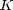 lines with parameters 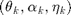, blurred with a spread, in an image of size 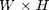 degraded by noise
- Launch the minimization algorithm with parameters 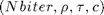
- From the solution 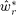, estimate the lines by Prony
Contents
DATA GENERATION
W=65; % image width (must be odd W=2M+1) H=65; % image height K=3; % number of lines spread=1; % std of the gaussian blur noiselevel=200; % level of noise randomgen=0; % boolean if lines are generated randomly of manually rng(0); % seed of random numbers generator plotData=1; % display images v, x and y plotComp=0; % display others comparaisons theo vs. emp t_k=[pi/6 -pi/5 pi/16]; % array containing angles of lines a_k=[255 255 255]; % array containing amplitude of lines p_k=[10 0 -15]; % array containing offset of lines data_generation; % Generate the blurred image xstar % of these K lines with additional % noise y=xstar+randn(H,W)*noiselevel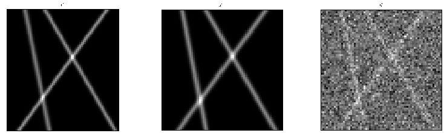
MINIMIZATION ALGORITHM
Nbiter=2000; % number of iterations rho=1.9; % weigth coefficient tau=0.6; % primal step (sigma is then computed from tau) c=700; % smaller than c_oracle to remove more noise plotError=1; % compute and display error displayIter=0; % display the counter iteration algo=2; % choose the minimization algorithm to use minimization_Chambolle; % Find by minimization an approximation wr % of wstar which is the horizontal Fourier % transform of the deblurred image sstar
Elapsed time is 257.118283 seconds.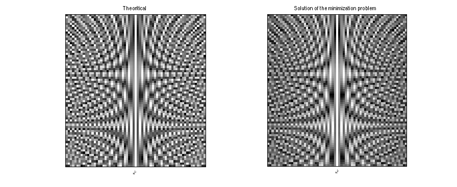 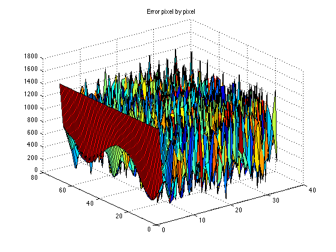 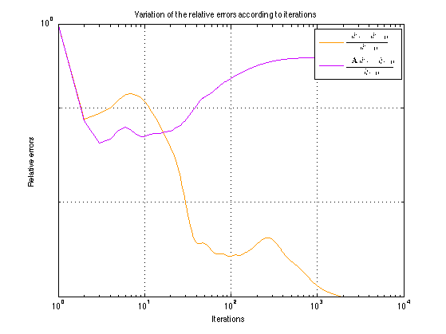
IMAGE RECONSTRUCTION AND LINES ESTIMATION
Reconstruct the denoised image xstar from wstar:
resynthesis;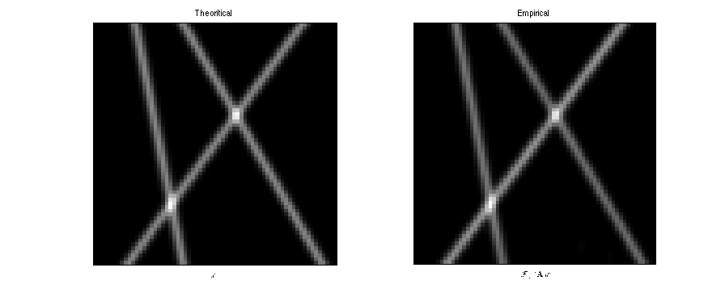
Estimate lines parameters and display it
cstar=sum(a_k./cos(t_k)); % theoritical atomic norm of each line coef=cstar/c; % factor between experimental and true amplitude prony;
thetamean = -0.63663 0.1844 0.57194 alphamean = 202.1061 185.5782 155.9103 eta = -0.0572949 -15.0438 9.96126 (thetamean-t_k)/t_k = 0.013231 -0.060853 0.092319 (alphamean*coef-a_k)/a_k = -0.015351 -0.095873 -0.24041 eta-p_k = -0.057295 -0.043771 -0.038742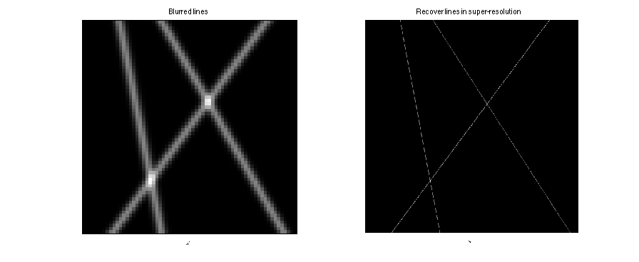